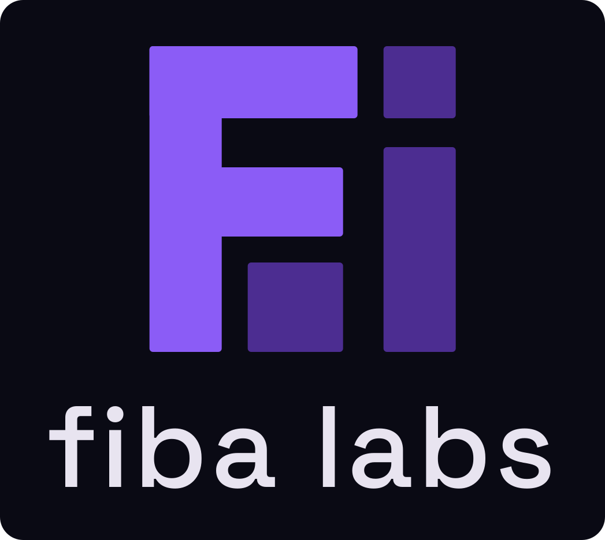

Any style. Any story. Your idea, animated.
What you're watching
I made the first part of this video by taking one of Alen's (few) YouTube appearances and animating it in several styles. When he saw it, his first comment was "This is ssick".
The second part recreates one of Alex Hormozi's recent videos. He used to write on paper while he talked, and now whiteboard drawings appear on screen as he tells the story. His clip is on top, and mine is below, with my avatar as an example.
I can add the drawings to any video of you talking to the camera. If you film all the angles at the same time, I can recreate the whole style, cuts included.
I can also start from just an idea: something you said on a podcast, a webinar or a masterclass, a script you have, or a story you want to tell.
What it can be
The cold open of your VSL, a 2-minute version of your method, the welcome video new clients watch on day one, a course module intro, a story ad, a client story told as a cartoon, or the same video in English and Spanish.
The copy and the offer stay yours, I make the video.